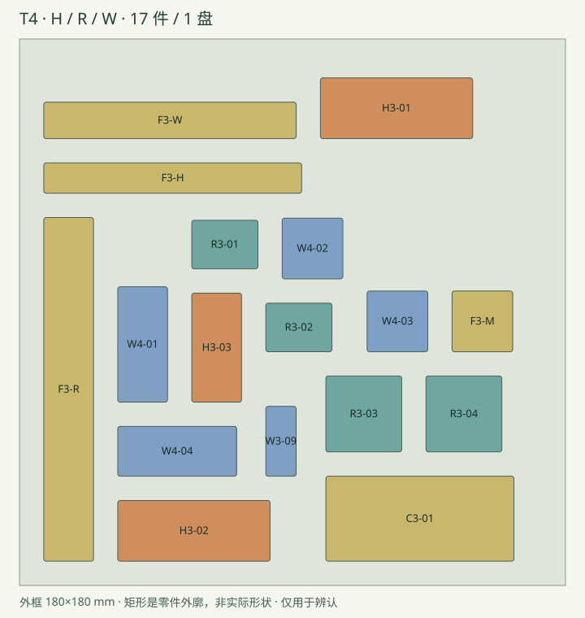

一个 A1 mini 180×180 mm 打印盘，含 12 个实际关节件、4 个可拆测试附件、1 个可选 C3-01 试配片，共 17 件，各一件。H、R 沿用 T3，W 为 T4 双轴腕。若已打印这些同版本零件，本次无需重印。
工程中的 17 个对象仍彼此独立，可以按编号隐藏或删除已有件；没有把它们焊成一个不可拆的 STL。原打印接触面保持不变，仅作盘面内旋转与平移。

离线切片已核对 17 个对象、零网格修复、未改变摆放，所有层的模型 / 支撑 / 裙边挤出路径在 180 mm 范围内。数字检查不等于已试打，也没有向打印机发送任务。工程不附机器可直接执行的 G-code。
| 零件 | 作用 | 数量 |
|---|---|---|
| C3-01 | 轴孔／普通螺母／方键试配片 | 1 |
| F3-H | H专用100mm加载杆／可拆 | 1 |
| F3-M | W独立测试用夹持柄／可拆 | 1 |
| F3-R | R专用径向100mm加载杆／可拆 | 1 |
| F3-W | W专用100mm加载杆／可拆 | 1 |
| H3-01 | 肘固定叉合模半件 -1 | 1 |
| H3-02 | 肘固定叉合模半件 1 | 1 |
| H3-03 | 肘转动叉／R模块方键接口 | 1 |
| R3-01 | 轴向旋转固定芯合模半件 -1 | 1 |
| R3-02 | 轴向旋转固定芯合模半件 1 | 1 |
| R3-03 | 同轴摩擦转盘／可更换磨损件 | 1 |
| R3-04 | 旋转输出壳／居中方键骨杆 | 1 |
| W3-09 | 实际掌部握柄（非100mm测试杆） | 1 |
| W4-01 | 前臂侧屈伸叉／T3方键接口 | 1 |
| W4-02 | 十字芯 下半 | 1 |
| W4-03 | 十字芯 上半 | 1 |
| W4-04 | 手掌侧偏摆叉／6mm掌柄方键 | 1 |